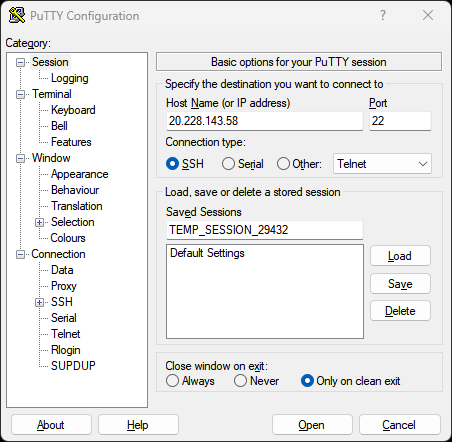
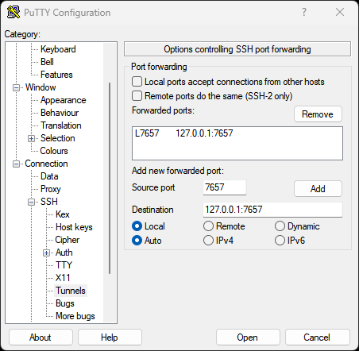
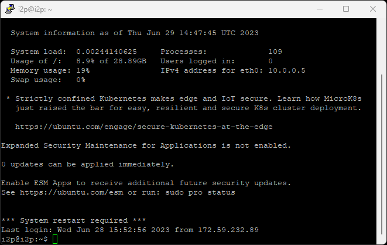
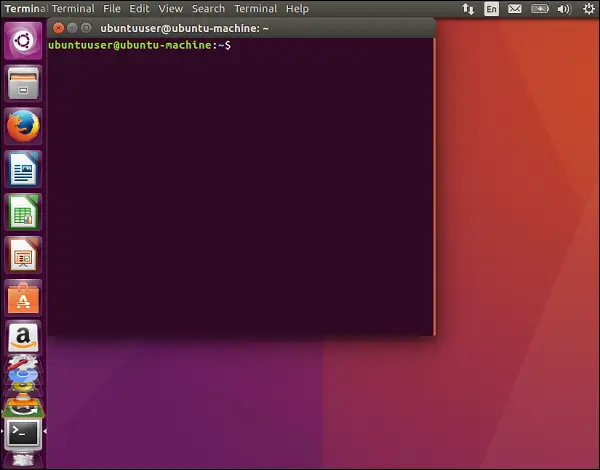
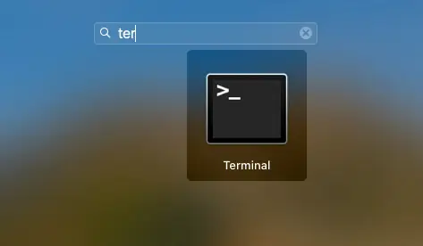

An SSH tunnel provides a secure, encrypted connection to access your remote I2P router’s console or other services. This guide shows you how to create SSH tunnels on Windows, Linux, and Mac systems.
What is an SSH Tunnel?
An SSH tunnel is a method of routing data and information securely over an encrypted SSH connection. Think of it as creating a protected “pipeline” through the internet - your data travels through this encrypted tunnel, preventing anyone from intercepting or reading it along the way.
SSH tunneling is particularly useful for:
- Accessing remote I2P routers: Connect to your I2P console running on a remote server
- Secure connections: All traffic is encrypted end-to-end
- Bypassing restrictions: Access services on remote systems as if they were local
- Port forwarding: Map a local port to a remote service
In the context of I2P, you can use an SSH tunnel to access your I2P router console (typically on port 7657) on a remote server by forwarding it to a local port on your computer.
Prerequisites
Before creating an SSH tunnel, you’ll need:
- SSH client:
- Windows: PuTTY (free download)
- Linux/Mac: Built-in SSH client (via Terminal)
- Remote server access:
- Username for the remote server
- IP address or hostname of the remote server
- SSH password or key-based authentication
- Available local port: Choose an unused port between 1-65535 (7657 is commonly used for I2P)
Understanding the Tunnel Command
The SSH tunnel command follows this pattern:
ssh -L [local_port]:[destination_ip]:[destination_port] [username]@[remote_server]
Parameters explained:
- local_port: The port on your local machine (e.g., 7657)
- destination_ip: Usually
127.0.0.1(localhost on the remote server) - destination_port: The port of the service on the remote server (e.g., 7657 for I2P)
- username: Your username on the remote server
- remote_server: IP address or hostname of the remote server
Example: ssh -L 7657:127.0.0.1:7657 i2p@20.228.143.58
This creates a tunnel where:
- Local port 7657 on your machine forwards to…
- Port 7657 on the remote server’s localhost (where I2P is running)
- Connecting as user
i2pto server20.228.143.58
Creating SSH Tunnels on Windows
Windows users can create SSH tunnels using PuTTY, a free SSH client.
Step 1: Download and Install PuTTY
Download PuTTY from putty.org and install it on your Windows system.
Step 2: Configure the SSH Connection
Open PuTTY and configure your connection:
- In the Session category:
- Enter your remote server’s IP address or hostname in the Host Name field
- Ensure Port is set to 22 (default SSH port)
- Connection type should be SSH

Step 3: Configure the Tunnel
Navigate to Connection → SSH → Tunnels in the left sidebar:
- Source port: Enter the local port you want to use (e.g.,
7657) - Destination: Enter
127.0.0.1:7657(localhost:port on remote server) - Click Add to add the tunnel
- The tunnel should appear in the “Forwarded ports” list

Step 4: Connect
- Click Open to initiate the connection
- If this is your first time connecting, you’ll see a security alert - click Yes to trust the server
- Enter your username when prompted
- Enter your password when prompted

Once connected, you can access your remote I2P console by opening a browser and navigating to http://127.0.0.1:7657
Optional: Save Your Session
To avoid reconfiguring each time:
- Return to the Session category
- Enter a name in Saved Sessions (e.g., “I2P Tunnel”)
- Click Save
- Next time, just load this session and click Open
Creating SSH Tunnels on Linux
Linux systems have SSH built into the terminal, making tunnel creation quick and straightforward.
Using the Terminal
Open a terminal and run the SSH tunnel command:
ssh -L 7657:127.0.0.1:7657 i2p@20.228.143.58
Replace:
7657(first occurrence): Your desired local port127.0.0.1:7657: The destination address and port on the remote serveri2p: Your username on the remote server20.228.143.58: Your remote server’s IP address

When prompted, enter your password. Once connected, the tunnel is active.
Access your remote I2P console at http://127.0.0.1:7657 in your browser.
Keeping the Tunnel Active
The tunnel stays active as long as the SSH session is running. To keep it running in the background:
ssh -f -N -L 7657:127.0.0.1:7657 i2p@20.228.143.58
Additional flags:
-f: Runs SSH in the background-N: Don’t execute remote commands (tunnel only)
To close a background tunnel, find and kill the SSH process:
ps aux | grep ssh
kill [process_id]
Using SSH Keys (Recommended)
For better security and convenience, use SSH key authentication:
-
Generate an SSH key pair (if you don’t have one):
ssh-keygen -t ed25519 -C "your_email@example.com" -
Copy your public key to the remote server:
ssh-copy-id i2p@20.228.143.58 -
Now you can connect without a password:
ssh -L 7657:127.0.0.1:7657 i2p@20.228.143.58
Creating SSH Tunnels on Mac
Mac systems use the same SSH client as Linux, so the process is identical.
Using the Terminal
Open Terminal (Applications → Utilities → Terminal) and run:
ssh -L 7657:127.0.0.1:7657 i2p@20.228.143.58
Replace:
7657(first occurrence): Your desired local port127.0.0.1:7657: The destination address and port on the remote serveri2p: Your username on the remote server20.228.143.58: Your remote server’s IP address

Enter your password when prompted. Once connected, access your remote I2P console at http://127.0.0.1:7657
Background Tunnels on Mac
Same as Linux, you can run the tunnel in the background:
ssh -f -N -L 7657:127.0.0.1:7657 i2p@20.228.143.58
SSH Key Setup on Mac
Mac SSH key setup is identical to Linux:
# Generate key (if needed)
ssh-keygen -t ed25519 -C "your_email@example.com"
# Copy to remote server
ssh-copy-id i2p@20.228.143.58
Common Use Cases
Accessing I2P Console
The most common use case - access your remote I2P router console:
ssh -L 7657:127.0.0.1:7657 user@remote-server
Then open http://127.0.0.1:7657 in your browser.
Multiple Tunnels
Forward multiple ports at once:
ssh -L 7657:127.0.0.1:7657 -L 7658:127.0.0.1:7658 user@remote-server
This forwards both port 7657 (I2P console) and 7658 (another service).
Custom Local Port
Use a different local port if 7657 is already in use:
ssh -L 8080:127.0.0.1:7657 user@remote-server
Access I2P console at http://127.0.0.1:8080 instead.
Troubleshooting
Port Already in Use
Error: “bind: Address already in use”
Solution: Choose a different local port or kill the process using that port:
# Linux/Mac - find process on port 7657
lsof -i :7657
# Kill the process
kill [process_id]
Connection Refused
Error: “Connection refused” or “channel 2: open failed”
Possible causes:
- Remote service isn’t running (check I2P router is running on remote server)
- Firewall blocking the connection
- Incorrect destination port
Solution: Verify the I2P router is running on the remote server:
ssh user@remote-server "systemctl status i2p"
Authentication Failed
Error: “Permission denied” or “Authentication failed”
Possible causes:
- Incorrect username or password
- SSH key not properly configured
- SSH access disabled on remote server
Solution: Verify credentials and ensure SSH access is enabled on the remote server.
Tunnel Drops Connection
Error: Connection drops after period of inactivity
Solution: Add keep-alive settings to your SSH config (~/.ssh/config):
Host remote-server
ServerAliveInterval 60
ServerAliveCountMax 3
Security Best Practices
- Use SSH keys: More secure than passwords, harder to compromise
- Disable password authentication: Once SSH keys are set up, disable password login on the server
- Use strong passwords: If using password authentication, use a strong, unique password
- Limit SSH access: Configure firewall rules to limit SSH access to trusted IPs
- Keep SSH updated: Regularly update your SSH client and server software
- Monitor logs: Check SSH logs on the server for suspicious activity
- Use non-standard SSH ports: Change the default SSH port (22) to reduce automated attacks
Automating Tunnels
Linux/Mac: Create a Startup Script
Create a script to automatically establish tunnels:
#!/bin/bash
# i2p-tunnel.sh
ssh -f -N -L 7657:127.0.0.1:7657 i2p@20.228.143.58
echo "I2P tunnel established"
Make it executable:
chmod +x i2p-tunnel.sh
./i2p-tunnel.sh
Linux: SystemD Service
Create a systemd service for automatic tunnel creation:
sudo nano /etc/systemd/system/i2p-tunnel.service
Add:
[Unit]
Description=I2P SSH Tunnel
After=network.target
[Service]
ExecStart=/usr/bin/ssh -NT -o ServerAliveInterval=60 -o ExitOnForwardFailure=yes -L 7657:127.0.0.1:7657 i2p@20.228.143.58
Restart=always
RestartSec=10
User=your-username
[Install]
WantedBy=multi-user.target
Enable and start:
sudo systemctl enable i2p-tunnel
sudo systemctl start i2p-tunnel
Advanced Tunneling
Dynamic Port Forwarding (SOCKS Proxy)
Create a SOCKS proxy for dynamic forwarding:
ssh -D 8080 user@remote-server
Configure your browser to use 127.0.0.1:8080 as a SOCKS5 proxy.
Reverse Tunneling
Allow the remote server to access services on your local machine:
ssh -R 7657:127.0.0.1:7657 user@remote-server
Jump Host Tunneling
Tunnel through an intermediate server:
ssh -J jumphost.example.com -L 7657:127.0.0.1:7657 user@final-server
Conclusion
SSH tunneling is a powerful tool for securely accessing remote I2P routers and other services. Whether you’re using Windows, Linux, or Mac, the process is straightforward and provides strong encryption for your connections.
For additional help or questions, visit the I2P community:
- Forum: i2pforum.net
- IRC: #i2p on various networks
- Documentation: I2P Docs
Guide originally created by Stormy Cloud, adapted for I2P documentation.